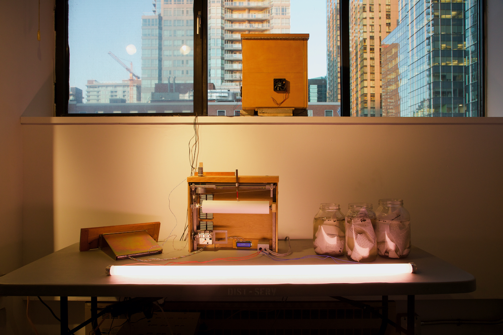
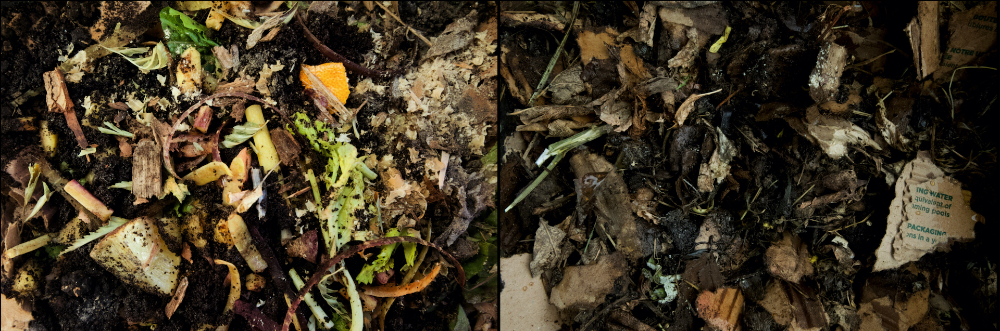
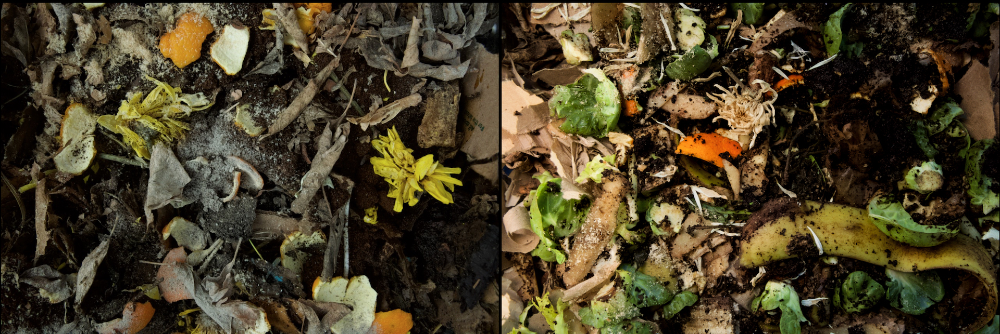
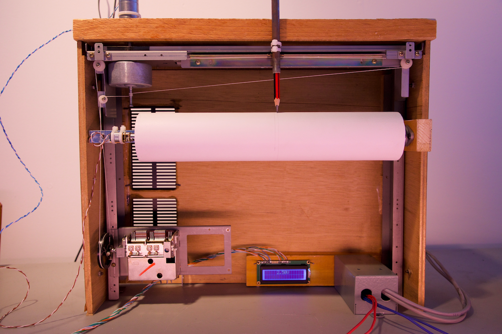
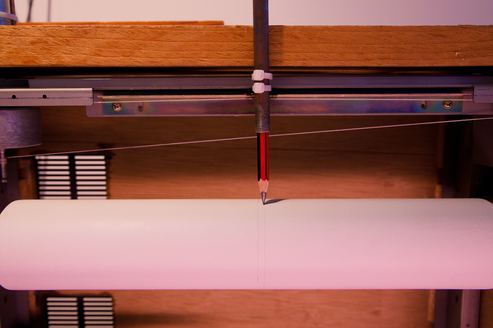
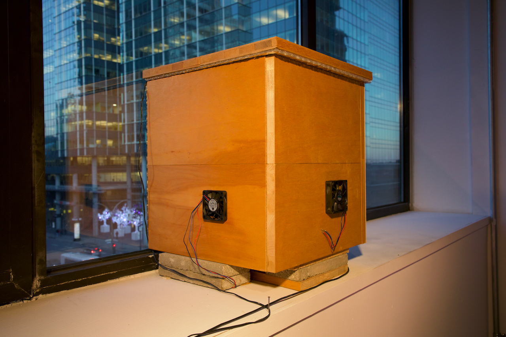
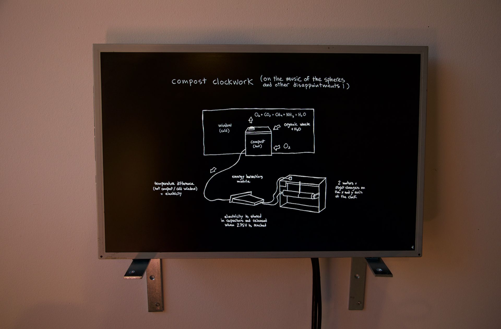
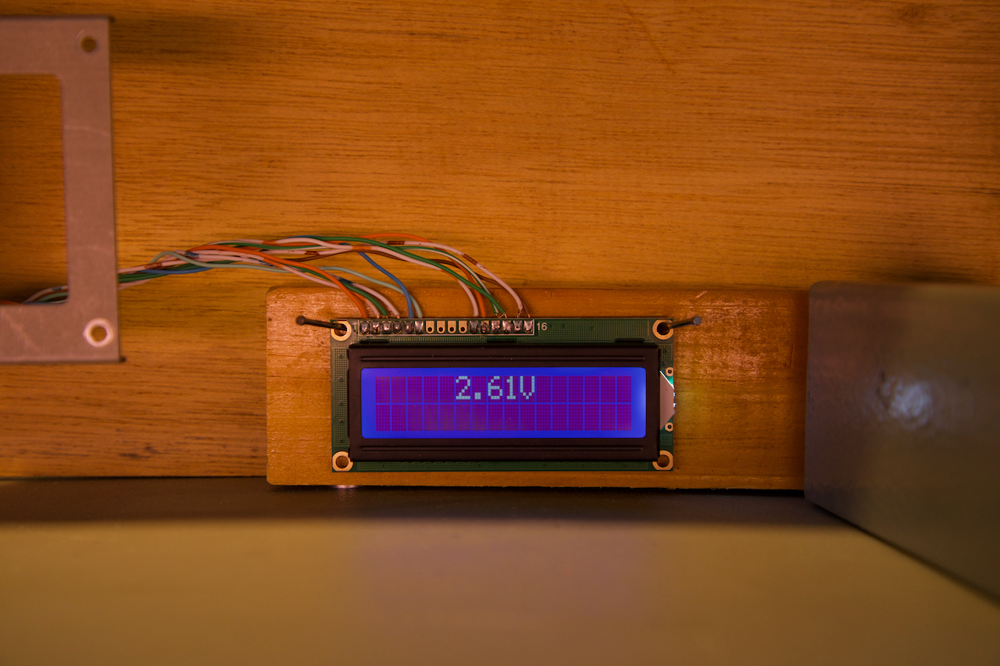
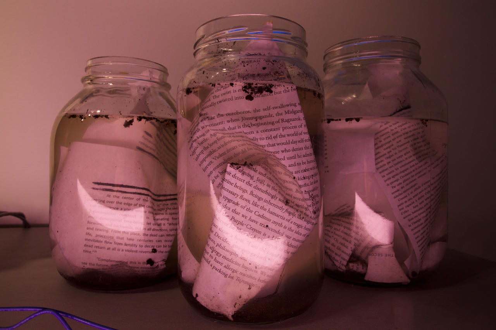
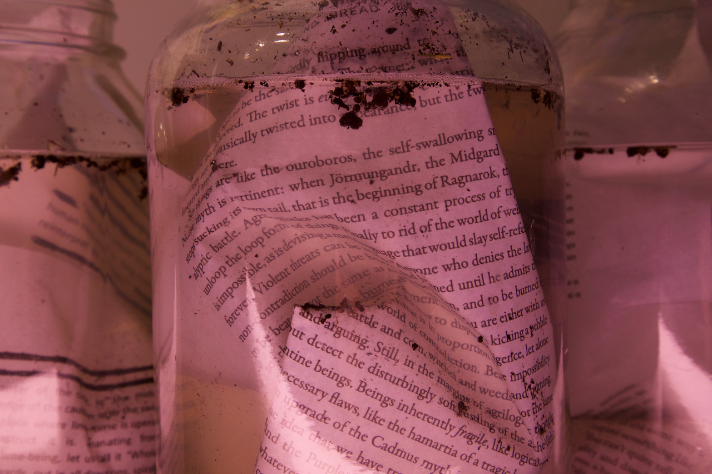

compost clockwork, 2022.

FR //
compost clockwork récolte la chaleur produite par une pile de compost pour marquer le passage du temps, inexactement et inutilement. Par un processus de transduction thermoélectrique et de récolte d’énergie, l’activité des bactéries thermophiles au sein du compost alimente deux moteurs. Une ligne est tracée (très) lentement sur la surface d’une cylindre blanc, dessinant une spirale imprévisible qui se repliera éventuellement sur elle-même. compost clockwork (dé)compose un espace ajusté à la temporalité du compost, invitant à considérer d’autres manières d’être dans le temps, de faire temps.
ENG //
compost clockwork scavenges the heat produced by a compost pile to mark the passage of time, unreliably and uselessly. Through a process of thermoelectrical transduction and energy harvesting, the activity of thermophilic bacterias within the compost powers two small motors. A line is (very) slowly drawn on the surface of a white cylinder, creating an unpredictable scribble that will eventually spiral and bend back on itself. compost clockwork (de)composes a space attuned to the temporality of compost, inviting us to consider other ways of being in time, of making time.








